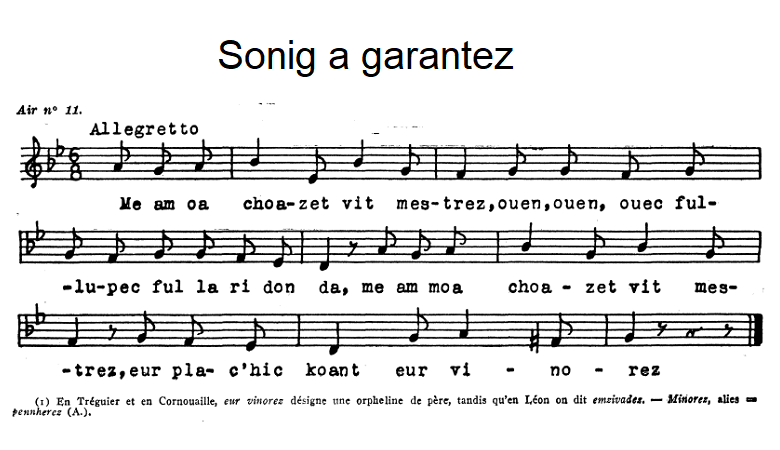

|
Sonig a garantez I 1. Me am-boa choazet 'vit mestrez Ouen, ouen, ouic, fullupeic, fallaridonda Me am-boa choazet 'vit mestrez Ur plac'hig koant, ur vinorez ( 1) 2. Ha me ' yey d'he gwelet feteiz Met ma c'halonig a vankfe. 3. Ma c'halon baour ne vanko ket Rak me yey raktal d'he gwelet. II 4. Ur plac'h a zave beure mat Evit lakaat he c'hoef ervat 5. Nag he mamm a lare dezhi: - Ma merc'h bravañ plac'h ez oc'h c'hwi! 6. - Petra ' dalv din-me be'añ koant Pa n'hellan kavet ma c'hoant? 7. - Tavit, ma merc'h, na ouelit ket: A-benn ur bloaz ' vefet dimeet. 8.- A-benn ur bloaz, sur, vin dimeet, Pa vin marv ha douaret . 9. Pa vin marv ha douaret Lakait me e-kreiz ar vered. 10. Lakait me e-kreiz ar vered Ha warnezhañ (?) pevar boked. 11. Unan vo gwenn, un all vo du Ma vo ar c'hañvoù en daou du.[2] 12. Unan vo ruz, unan vo glaz Ma vo ar c 'hañvoù e bep plas. [2] 13. Neuze paz erruo miz mae Teuy ar gler yaouank da vale 14. Nag a laro ar gler yaouank: Setu aze bez ur plac'h koant! 15. Setu amañ bez ur plac'h koant A zo marvet e-kreiz he c'hoant 16. A zo marvet e kreiz he c'hoant Gant keuz d' ur c'hloareg yaouank. 17. Gand keuz d' ur c'hloareg yaouank Dimeus a Zantez Kroaz Gwengamp. [3] |
Chansonnette d'amour I 1. Je m'étais choisi pour amie Ouen, ouen, ouic, fullupeic, fallaridonda Je m'étais choisi pour amie Une jolie fille, une orpheline [1] 2. J'irais bien la voir aujourd'hui Mais le courage me manquera. 3. Mais si, j'aurai le courage Je m'en vais la voir de ce pas. II 4. Une fille se levait de bon matin Pour bien arranger sa coiffe. 5. Voilà que sa mère lui dit: - Ma fille, la plus belle, c'est vous! 6. - Cela me sert à quoi d'être belle Si je ne peux avoir ce que je désire? 7. - Taisez-vous, ma fille, ne pleurez pas! Dans un an vous serez mariée. 8.- Pour sûr, dans un an je serai mariée, Quand je serai morte et enterrée! 9. Quand je serai morte et enterrée, Mettez-moi au milieu du cimetière. 10. Mettez-moi au milieu du cimetière Et posez sur ma tombe (?) quatre bouquets. 11. Un blanc, un autre noir Pour que le deuil règne des deux côtés. [2] 12. Un rouge et un bleu [2] Pour que le deuil règne en tout lieu. [2] 13. Puis quand viendra le moi de mai Les jeunes clercs passeront par ici. 14. Et ils diront, ces jeunes clercs: Voici la tombe d'une jolie fille. 15. Voici la tombe d'une jolie fille. Qui est morte du désir 16. Qui est morte du désir D'être unie à un jeune clerc. 17. D'être unie à un jeune clerc. De Sainte-Croix à Guingamp [3]. |
A ditty of love I 1. I had chosen as my girl friend Ouen, ouen, ouic, fullupeic, fallaridonda I had chosen as my girl friend A pretty girl, an orphan (1) 2. I would go see her today But the courage will fail me. 3. Now I will have the courage I'm going to see her now. - II 4. A girl woke up early To properly arrange her headdress. 5. Her mother said to her: - My daughter,you are the prettiest of all! 6. - What's the use of being pretty If I can't have what I want? 7. - Be quiet, my daughter, do not cry! In a year you will be married. 8.- How could I in a year be married, If I am dead and buried? 9. When I'm dead and buried, Put me in the middle of the graveyard. 10. Put me in the middle of the graveyard And lay on my grave (?) four bouquets. 11. One white, another black So that mourning be on both sides. [2] 12. One red and one blue So that mourning be everywhere.[2] 13. Then when May comes Young students will pass through here. 14. And these young students will say: Here is the grave of a pretty girl. 15. This is the grave of a pretty girl. Who died of desire 16. Who died of desire To be united with a young clerk. 17. To be united with a young student. From Sainte-Croix in Guingamp. [3] |
|
[1] "Cette chanson est composée sur un sujet triste avec un air approprié, mais le refrain lui donne un caractère un peu trivial et railleur. Ce sujet d'une jeune fille qui meurt de chagrin pour n'avoir pu épouser son fiancé de cur a donné lieu à bien des compositions, soit sérieuses, soit railleuses." A propos de cette note reprise de l'ouvrage du Colonel Bourgeois,on doit remarquer que dans plusieurs versions le désir d'être mariée de l'orpheline de père (cest le sens de "minourez") ne se porte pas sur un prétendant particulier. C'est le statut de jeune fille nubile et célibataire qui est ressenti comme une malédiction, justifiant la macabre mise en scêne décrite dans toutes les versions. [2] "Ma vo ar c'hañvoù en daou du... e bep plas" : "Que le(s) deuil(s) soi(en)t des deux côtés...en chaque endroit ". Il s'agit d'obtenir des prières (menus suffrages) du plus grand nombre possible de visiteurs du cimetières. Dans une version notée par François Vallée (Celle qui mourut), on parle du deuil comme on le ferait d'une danse: "Da gas ar c'hañvoù d'an daou benn...paz da baz" : "Pour conduire le deuil aux deux extrémités ... pas à pas". Sans doute faut il lire "plas da blas", "de place en place", (de tombe en tombe). Il s'agit d'étendre le deuil à la totalité du cimetière. [3] Les chants bretons citent volontiers des lieux connus de l'auditoire. Sainte Croix est un quartier de Guingamp où il y eut une abbaye jusqu'en 1748. Lors de la Révolution l'abbaye et les locaux abbatiaux furent vendus comme biens nationaux et disparurent petit à petit. Le "clerc" (kloareg) dont on parle étudiait sans doute à cette abbaye. |
[1] "This song is composed on a sad subject with an appropriate air, but the refrain gives it a somewhat trivial and mocking character. The topic of a young girl who dies of grief for not being able to marry her sweetheart has given rise to many compositions, either serious or mocking." About this remark taken from the collection of Colonel Bourgeois, it should be noted that in several versions the girl who is an orphan of a father (this is the meaning of "minourez") does not mean a suitor in particular. It is her status of a nubile and celibate young girl that she feels as a curse, justifying the macabre staging described in all versions of the song. [2] "Ma vo ar c'hañvoù en daou du... e bep plas": "May the mourning(s) be on both sides...in each place". It is a question of obtaining prayers (so-called small suffrages) from the greatest possible number of visitors to the cemetery. In a version recorded by François Vallée (Celle qui mourut), mourning is addressed as would be a dance: "Da gas ar c'hañvoù d'an daou benn...paz da baz": "To lead mourning to both ends... step by step". Very likely it should read "plas da blas", "from place to place", (from tomb to tomb). The mourning should extend to the whole of the cemetery. [3] The Breton songs willingly quote places known to the audience. Sainte Croix is a district of Guingamp where there was an abbey until 1748. During the Revolution, the abbey and all premises were sold as national property and gradually disappeared. The "clerk" (kloareg) we are talking about probably studied at this abbey. |